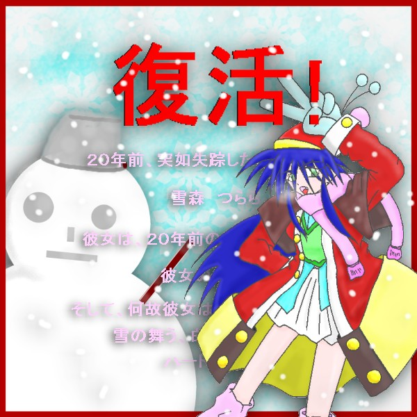
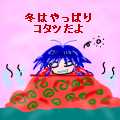

 |
|
| DEDICATED STORIES | CONTRIBUTER | RECOMMEND |
| ２０年目のサンタクロース | Cindyさん | 少年少女というよりは「クリスマス」「サンタちゃん」属性の強いお話ですが、クリスマスに相応しい、さわやかなショート・ストーリーです。雪の降る夜に読みたいですね。メリークリスマス。 |
| こたつ | 水谷秋夫さん | 水谷さんがなんと、意表を突いてミニ絵のほうにお話をつけてくれました。急降下爆撃のような一発ネタ作品です。シチュエーションがいいですね。やっぱり冬はこたつでみかんです。 |